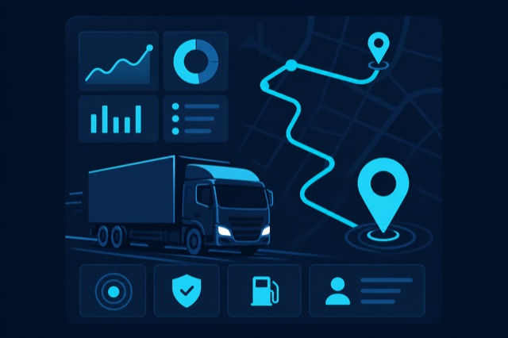

Producto, no solo código
Entendemos procesos, roles y métricas antes de escribir la primera línea. Así evitamos sistemas que nadie adopta.
En Logike creamos productos digitales para empresas: arquitectura sólida, interfaces útiles y despliegues reproducibles. La tecnología moderna no tiene por qué ser inalcanzable para tu operación.
Combinamos diseño de software empresarial con entrega continua: aplicaciones que cargan rápido, escalan con el negocio y se pueden operar con tranquilidad.
Entendemos procesos, roles y métricas antes de escribir la primera línea. Así evitamos sistemas que nadie adopta.
Usamos stacks probados en producción mundial y los adaptamos a presupuestos y equipos reales en Latinoamérica.
Monolitos modulares listos para crecer: nuevos módulos sin romper el núcleo, pruebas automatizadas y límites claros entre capas.

FMS SaaS es nuestra plataforma de gestión de flotas y logística en modelo multi-tenant: varias organizaciones operan de forma aislada sobre una infraestructura compartida, con foco en transporte de carga y rentabilidad por viaje.
Planificación de viajes, hitos de ruta y trazabilidad de la flota en movimiento.
Ingresos, combustible, peajes y viáticos integrados para decisiones en tiempo real.
Aislamiento de datos entre tenants y auditoría en entidades críticas.
Alertas por vencimientos, kilometraje y mantenimientos antes de que sea tarde.
El mismo criterio técnico que aplicamos en proyectos internos: rendimiento, mantenibilidad y despliegue simple en cualquier nube.
Backend transaccional en Java 21 y Spring Boot, interfaz rica con Vaadin (SSR), identidad con Keycloak (OIDC), datos en PostgreSQL, empaquetado y operación con Docker. Arquitectura hexagonal, DDD y monolito modular para evolucionar sin caos.
Cuéntanos el contexto de tu empresa y te respondemos con una propuesta clara: alcance, tecnología recomendada y forma de entrega.
Escríbenos a hola@logike.co